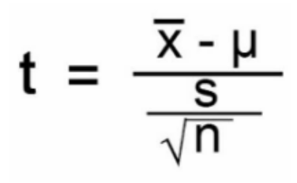

Analyzing My ACS in Valorant Compared to Other Players
Valorant is a competitive 5v5 first-person shooter game developed by Riot Games, where players rely on precise aim, team coordination, and strategic decision-making across tactical rounds. Each player's performance is quantified using the Average Combat Score (ACS), which reflects their overall in-game impact.
To evaluate whether I consistently outperform my teammates and opponents, I collected data from my 40 most recent ranked matches. For each game, I recorded my ACS and the average ACS of the other nine players (4 teammates + 5 opponents). Since these values are naturally paired within each match, I chose a paired t-test at the 95% confidence level.
Hypotheses
H₀: μmy ACS − μothers' ACS = 0
Hₐ: μmy ACS − μothers' ACS ≠ 0
Assumptions and Conditions:
- Paired Data: Each match provides a matched pair between my ACS and the average of the other players, making it a paired sample.
- Randomness: While not randomly selected, the 40 most recent matches represent my natural performance over time without cherry-picking.
- Normality: With n = 40, the Central Limit Theorem justifies the assumption of approximate normality.
Using the difference values from the 40 matches (My ACS − Avg. ACS of others), the test statistic is computed with:
Given:
- Mean difference (𝑥̄) = 1.65
- Standard deviation (s) = 70.51
- Sample size (n) = 40
The resulting p-value is 0.883, which is greater than α = 0.05. Therefore, we fail to reject the null hypothesis.
This suggests that, based on this data, my combat performance is consistent with the average player in ranked Valorant games.